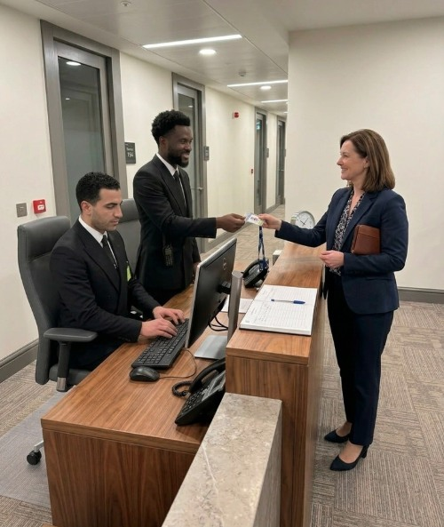
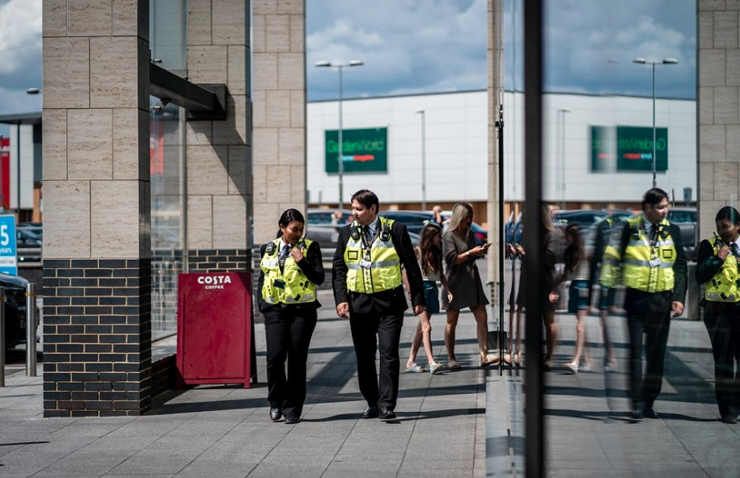
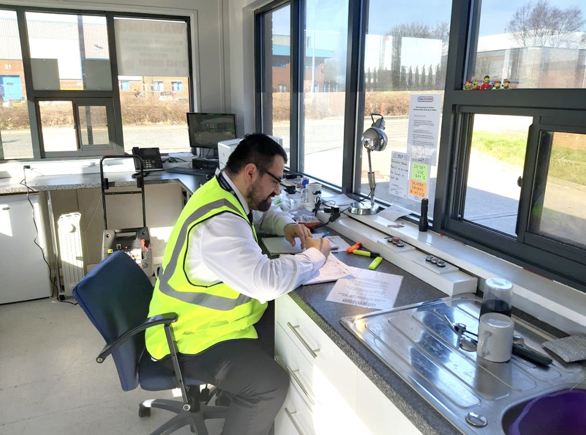
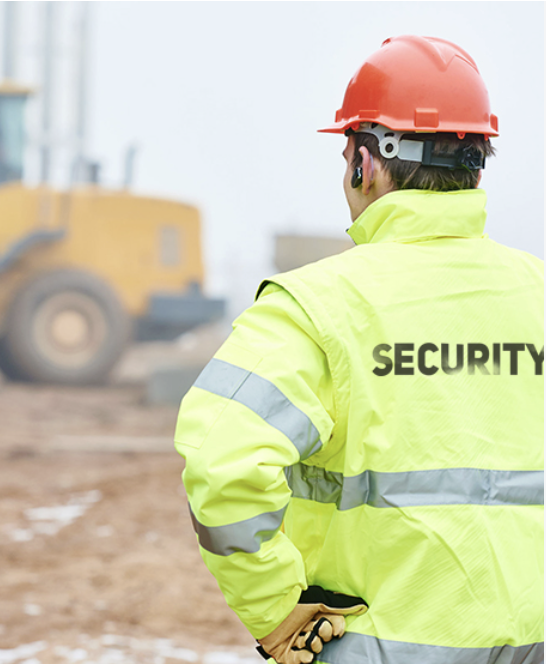
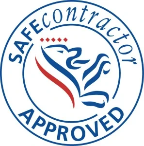

Corporate Security
Professional officers for offices, reception environments, managed buildings and corporate estates.
Explore service →Professional guarding and security support for corporate premises, gatehouses, factories, industrial estates, retail environments and construction sites.
Our services are structured around the environment being protected, the people using it and the operational risks that need to be controlled.
Professional officers for offices, reception environments, managed buildings and corporate estates.
Explore service →Access control, vehicle movements, contractor management, keys, deliveries and site procedures.
Explore service →Visible, customer-aware protection supporting deterrence, loss prevention and incident response.
Explore service →Site access, perimeter awareness, asset protection and out-of-hours security for active projects.
Explore service →Scheduled internal and external patrols focused on boundaries, vulnerable points and site integrity.
Explore service →Observation, incident escalation and communication support for monitored security environments.
Explore service →
Our objective is not simply to place an officer at a site. We work to understand how the premises operates, where vulnerabilities exist, what the client expects and how security activity should be evidenced.
Where the assignment requires it, VSE Security can use digital tools to strengthen accountability. Rather than relying only on handwritten records, officers can use site devices and electronic checkpoints to support attendance, patrol verification and operational reporting.
Officers can use site-assigned devices and checkpoints to record patrol activity and create an auditable patrol history.
Digital processes support officer sign-in, sign-out and duty accountability for clearer operational oversight.
Patrol and site activity records can be compiled into reports that give clients evidence of checks completed on their premises.
Structured reporting helps capture incidents, observations and required follow-up so relevant information reaches the right people.
Understand access points, operating hours, assets, threats, vulnerable areas and client priorities.
Define post duties, patrol requirements, reporting, escalation, access control and assignment instructions.
Allocate suitable personnel, confirm licensing requirements and complete site-specific induction.
Use client feedback, reports, incidents and operational records to review service performance.

Visible security that balances deterrence and incident response with a professional customer-facing presence.

Gatehouse control, vehicle movements, deliveries, contractors, patrols and out-of-hours site protection.

Access control, perimeter awareness and asset protection around changing, high-activity project environments.
Tell us about your premises, operating hours and security requirement. We can discuss a site-focused solution.
